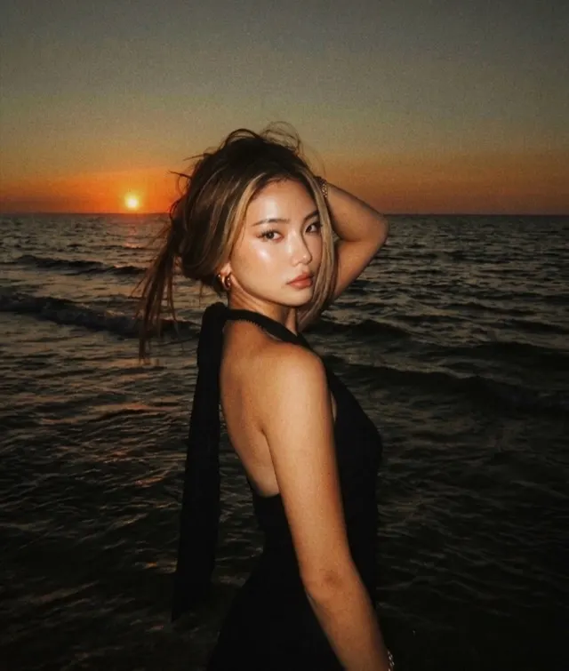
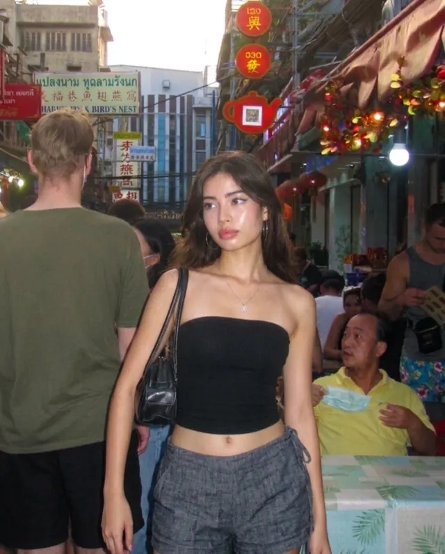

Disposable
Classic Flash · Neon Flash · Amber Flash
An AI photo editor for iPhone that regrades your photos the way a colorist would. Pick a look, or hand it any reference photo — then fine-tune every detail yourself.

The looks
Each look is a full grade, built to hold up across a whole set of photos — not a one-tap filter that falls apart on the next shot.

Classic Flash · Neon Flash · Amber Flash
Instant · Natural · Soft Flash · Expired

Digicam · Night Out · Indie Sleaze
Soft Sun · Direct Sun · Dusk
Movie Still · Neon · Cold Steel
Black & White, Dream Bloom, Studio Portrait, Motion Blur — and new ones as they drop.
See them all in the appWhat it does
For creators and photographers who want every post to belong to the same visual world — not a folder of one-off filters.
 01
01
Browse curated looks — Y2K digicam flash, disposable camera, warm studio portrait and more — and see sample photos for every variation before you pick one.
 02
02
Got a mood no preset covers? Drop in a reference photo and Aesthiq reads its colour, contrast and light, then applies that treatment to your own shot.
 03
03
Every edit is saved with a before-and-after view, so you can see the through-line across a set and reapply the same look to the next photo in seconds.
 04
04
The AI grade is a starting point, not a verdict. Dial the style amount, then adjust exposure, contrast, temperature, grain and more until it's exactly yours.
 05
05
Finish with instant-camera frames, date stamps, film grain and light leaks, layered over any grade to land the exact era you're going for.
How it works
Any shot from your camera roll, or share one straight into Aesthiq from Photos.
Nine curated looks with variations — or your own reference photo.
Aesthiq regrades the photo like a colorist would. Fine-tune with sliders and overlays.
Under the hood, Aesthiq runs on Google's Gemini models for image understanding and grading, with on-device rendering for the manual adjustments so edits stay instant.
Pricing
Aesthiq is free to download. Every account gets starter edits plus a free edit each day — Aesthiq Pro removes the limit.
Prices shown in USD and may vary by region. Subscriptions renew automatically until cancelled, and can be managed or cancelled any time in your Apple ID settings. See the Terms of Use and Privacy Policy for full details.
About

Dineth Panagoda
Founder & Engineer
Aesthiq is an independent, self-funded iOS studio. I design, build and ship the app end to end — the SwiftUI client, the grading pipeline, and the backend that serves the style catalog.
It started from a simple frustration: filter apps make one photo look good, but they can't hold a consistent look across everything you post. Aesthiq is the attempt to fix that.
Support, press or partnerships — email reaches me directly.